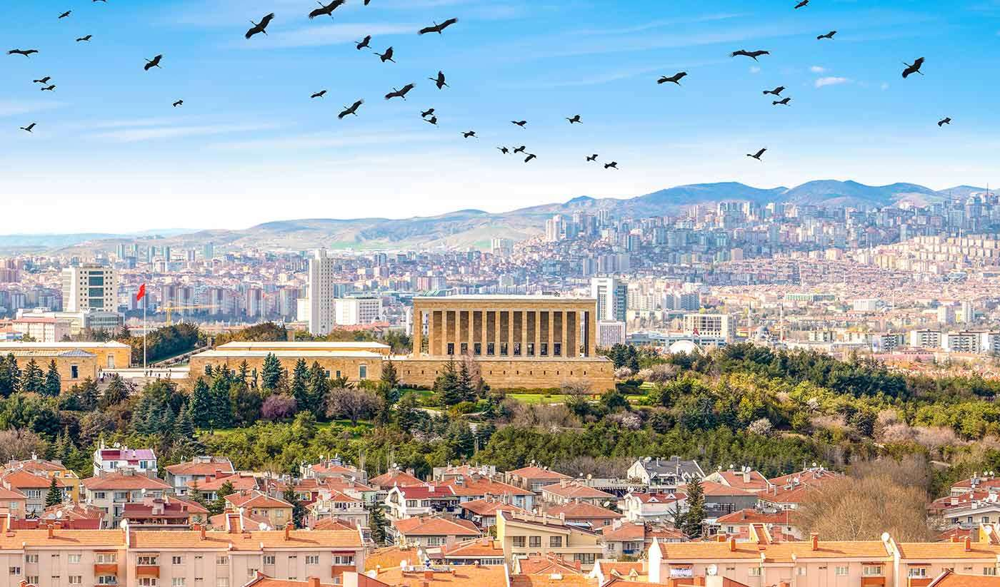
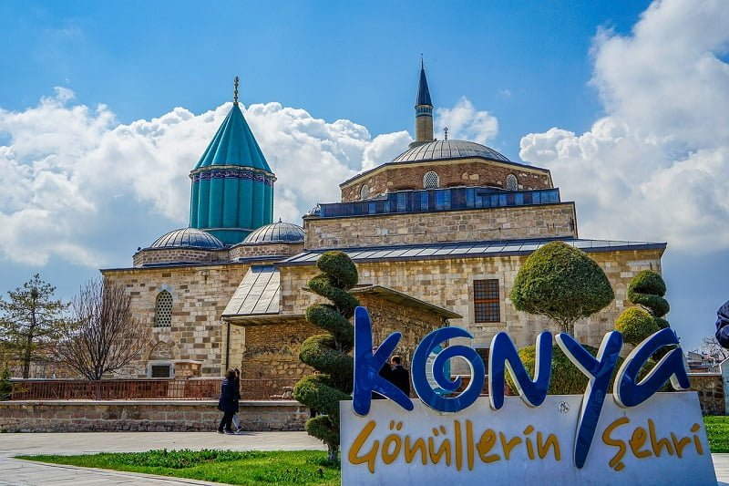
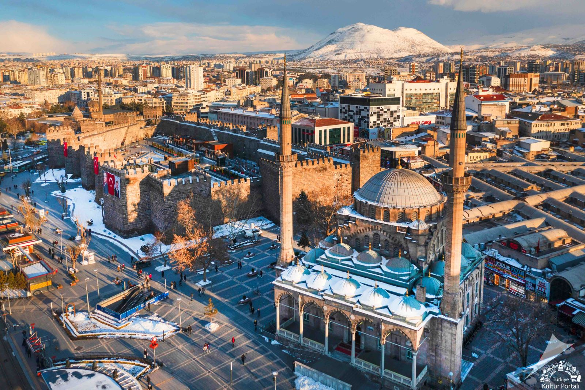
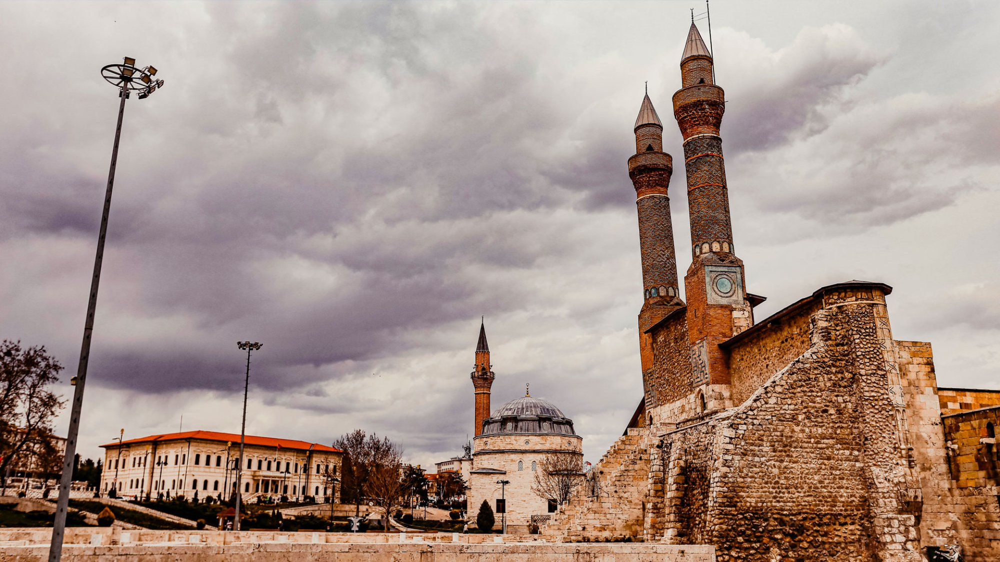
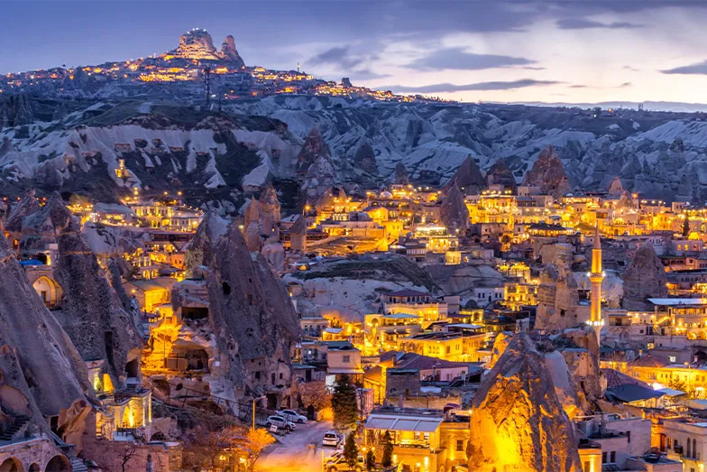
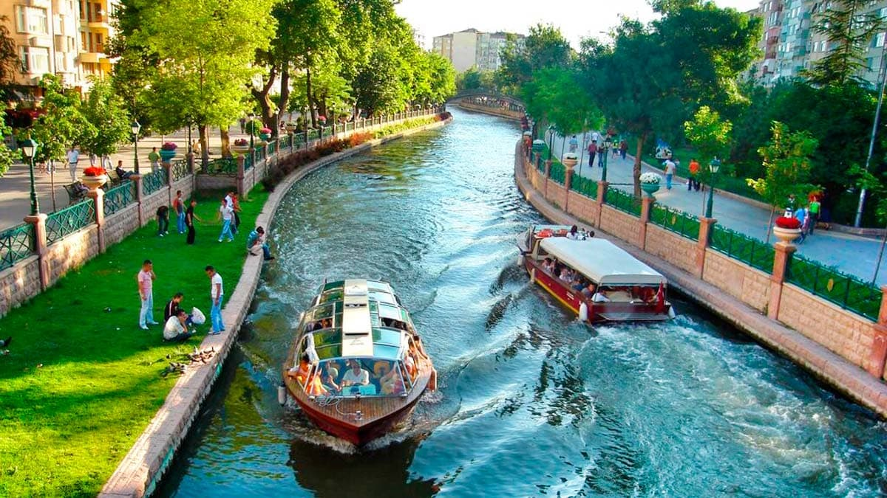
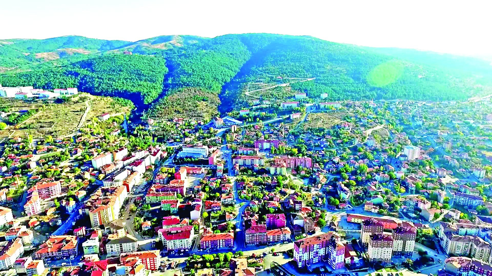
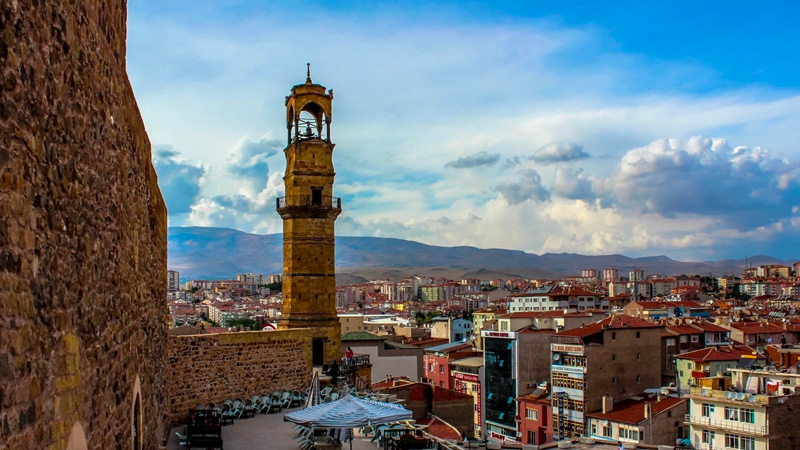
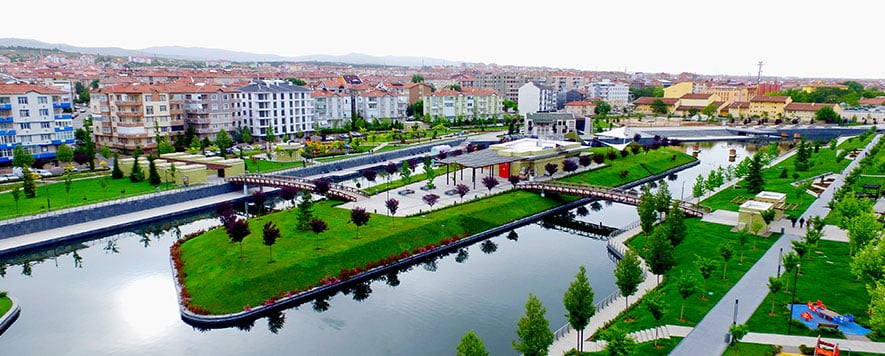

Türkiye’nin başkenti olan Ankara, tarihi ve modern yapılarıyla dikkat çeker.

Mevlana, tropikal seralar ve geniş ovalarıyla dikkat çeken kültürel bir merkezdir.

Erciyes Dağı, pastırması ve tarihi çarşılarıyla tanınır.

Tarihi medreseleri ve Cumhuriyet’in temellerinin atıldığı şehir.

Kapadokya, Peri Bacaları ve yer altı şehirleriyle büyüleyici bir turizm merkezidir.

Porsuk Çayı, öğrencilerle dolu yaşam enerjisi ve kültürel festivalleriyle ünlüdür.

Termal suları, bozkır manzaraları ve geleneksel yapısıyla huzurlu bir şehir.

Aladağlar Milli Parkı ve tarihi Niğde Kalesi ile doğa ve tarihin buluştuğu şehir.

Ahi Evran ve Neşet Ertaş’ın memleketi, müzik ve esnaf kültürünün merkezi.